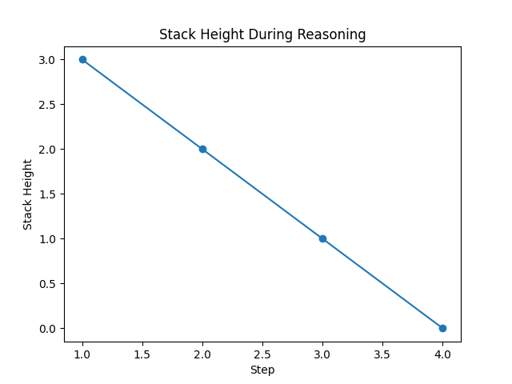

This webpage presents a simulation of stack-augmented reasoning used to model how structured prompts can be processed using a stack data structure.
The simulation is implemented in Python using the following components:
task_stack.py – Stack implementationstack_controller.py – Simulation enginellm_interface.py – Mock LLM reasoningrun_demo.py – Executes the simulationThe simulation is executed locally using Python. Since GitHub Pages supports only static content, the execution results are displayed below.
The graph below visualizes how the stack height changes during task execution.

Detailed execution steps are available in:
outputs/execution_log.txt
Note: This is a simulation of reasoning behavior. No real LLM is used.